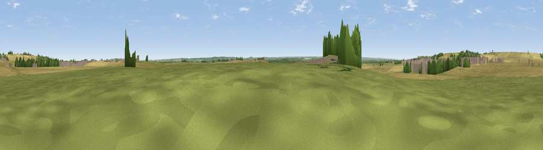

Capel Hill
#35822 in England · top 60% of its area beats it · near WardenThe view, rendered

A 360° render of this exact spot computed from the terrain model, tree cover and land cover — summer colours, afternoon light, calibrated against photographs of famous viewpoints. Real trees, hedges and buildings will differ in detail.
The panorama
Grey silhouette: terrain skyline in each direction (720 bearings, Earth curvature and refraction included). Dashed green: skyline with trees (+15 m) and buildings (+8 m) as obstacles. Blue strip: how far the ground is visible on each bearing.
Where the view opens
Wedge length = distance to the farthest visible ground on that bearing (vegetation-aware). Rings at 10, 25 and 50 km.
What fills the view
50% cropland · 35% grassland · 7% built-up · 5% woodland · 1% water
Angular shares of the visible panorama (visual magnitude), not map area. Landscape diversity 0.49 (0–1 Shannon).
Key numbers
More beautiful places nearby
The staircase of upgrades: each row has a higher view potential than everything closer. Driving times are estimates from straight-line distance, calibrated against real road routing — check an actual route before setting out.
| Place | Direction | Drive | Score |
|---|---|---|---|
| Viewpoint near Eastchurch | WNW · 3 km | ~7 min | 57.0 |
| Viewpoint near Warden | NNE · 3 km | ~7 min | 58.2 |
| Viewpoint near Minster | NW · 5 km | ~10 min | 58.8 |
| Viewpoint near Halfway | WNW · 8 km | ~17 min | 60.2 |
| Viewpoint near Yorkletts | SE · 11 km | ~20 min | 60.9 |
| The Mount (Popsy's View) | S · 15 km | ~27 min | 61.7 |
| Viewpoint near Charing | SSW · 20 km | ~34 min | 68.6 |
| Viewpoint near Westwell | S · 22 km | ~36 min | 72.2 |
51.39079, 0.88491 · source: osm peak · position refined by local search. Computed location — check access rights before visiting.